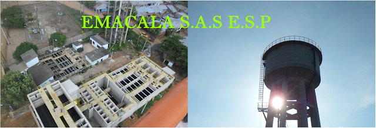

San Pablo, Sur de Bolivar
HISTORIA La empresa EMACALA S.A.S ESP. Surge de la transformación de UNAESP Mediante decreto 010 de enero 25 de 2010. En el mandato del señor EMILIO BRITON BARROS, el gerente de esta época era el señor HIPOLITO VASQUEZ PEDROZO. A partir del 2013 toma posesión del cargo de gerente el señor WILMAN VILLEGAS CASTRO, quien maneja una planta de personal de 30 empleados aproximadamente, entre trabajadores de planta y prestadores de servicio.Cuenta con 2040 usuarios registrados.
